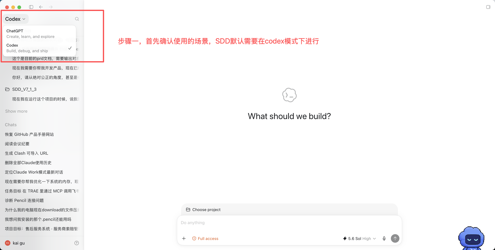
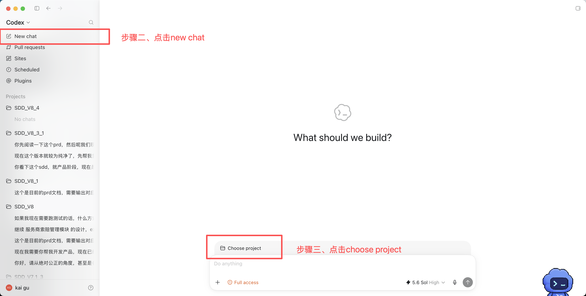
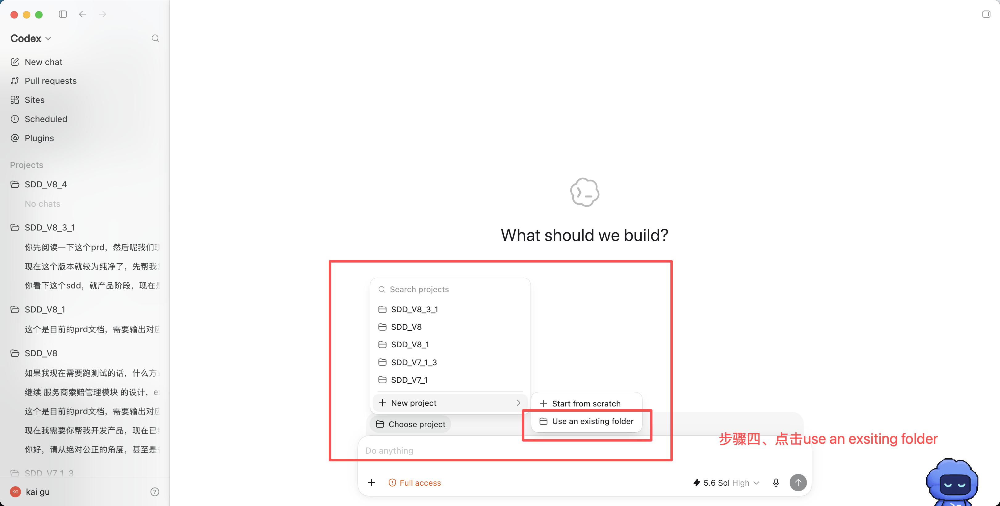
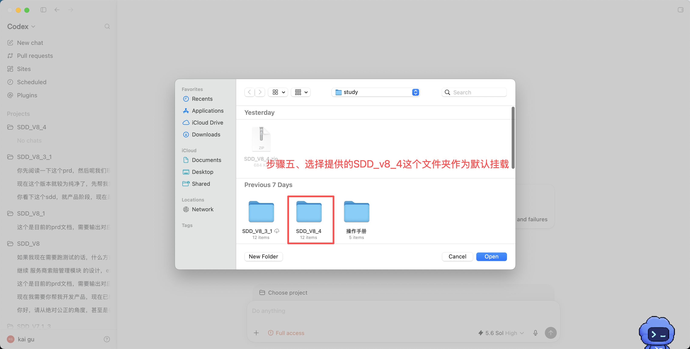

把需求做实、逐条冻结，
再让 AI 只读实现。
SDD_V8_4 是一套项目管理型、多平台 AI 研发流水线。默认从用户上传的半成品 PRD 开始审计、补齐和设计延展；低频场景也保留从零生成 PRD 初稿的入口。产品侧负责设计并冻结，研发侧拿冻结合同只读实现。人拍板，Agent 执行，门禁把关。
01定位与核心概念
先搞懂这几个词，后面全流程就顺了。
Projects_Repo/，再按你的意图进入六大分支之一，然后跑完整的 PRD 审计与延展→产品设计→多 Agent 开发→测试→修复流水线。| 概念 | 含义 |
|---|---|
| Harness 根目录 | 你打开的这个仓库根。只放规则和适配，不放业务代码。 |
harness-core/ | 唯一真相源。所有流程规则、角色定义、开发规范都在这。 |
.claude/ .codex/ .cursor/ | 平台适配层。只做"入口翻译"，不复制流程。 |
Projects_Repo/<id>/ | 所有业务项目都放这里，一个项目一个目录。 |
docs/ | 项目的设计文档（PRD、原型、接口契约、详细设计…）。 |
.sdd/ | 项目的状态大脑（任务、状态机、经验、日志、测试报告、审计报告）。 |
| 两侧接力 | 产品侧（设计域）与研发侧（执行域）分离，可换人、换会话。 |
| 冻结合同 | docs/feature-signoff.md，产品侧交给研发侧的唯一凭证。 |
| 门禁 gate | 每阶段结束必须用户确认才能进下一步；不满足条件就卡住。 |
02快速上手 · 你只需要说人话
SDD_V8_4 几乎不用手动命令。你用自然语言表达意图，Router 自动分发到六大分支。
| 你想做的事 | 你可以这么说 | 进入的分支 |
|---|---|---|
| 基于半成品 PRD 启动（默认） | “我上传了 PRD，请基于它启动 SDD” | ① 新建项目 · PRD 审计与延展 |
| 只有想法、没有 PRD（低频） | “我还没有 PRD，请从零帮我梳理” | ① 新建项目 · PRD 初稿生成 |
| 改已有项目的设计 | "改需求 / 加个功能的设计 / 调整接口契约" | ② 设计修整 |
| 把老代码纳入管理 | "把这个已有项目接入 SDD / 导入代码库" | ③ 导入项目 |
| 不要某个项目了 | "删除项目 / 这个项目不要了" | ④ 删除项目 |
| 开始写代码 | "开始开发 / 继续开发 / 接手这个项目" | ⑤ 开始/继续开发 |
| 修已交付功能的 Bug | "修一下这个 bug" 或 /sdd-bugfix | ⑥ Bugfix |
03全流程全景图
阶段字母就是真实执行顺序：R→A→B1→B2→C→(D)→E→F→G→冻结→开发。E/F/G 都在产品交接点之后由研发组长生成。
04角色区分 · 人 + Agent
SDD_V8_4 不是一个角色端到端跑完。它把工作切成"人负责拍板、Agent 负责执行"。
人侧角色
| 角色 | 负责什么 | 在哪拍板 |
|---|---|---|
| 产品经理 | 需求与设计的负责人 | R→A→B1→B2→C 全程，D 决策拍板 |
| 研发组长 | 接口契约 / Plan / 测试用例 / 冻结签署 | E / F / G / 冻结，研发侧最终负责人 |
| 底层研发 | 研发侧会话操作者（驱动流程、过门禁、处理阻塞） | 开发执行 |
| 业务方 / 用户 | 需求来源与最终验收人 | 每个功能闭环的用户门禁 |
Agent 角色
| Agent | 身份 | 职责 | 关键原则 |
|---|---|---|---|
| 主会话 Orchestrator | 编排者 | 产品侧各阶段执行者；研发侧编排 Planner→Developer→Tester | 绝不在主会话直接写功能代码绕过角色边界 |
| Planner | 技术方案设计 | 把 PRD/Plan 拆成任务状态机 .sdd/tasks.md | 验收标准要让非技术用户从页面看懂 |
| Developer | 代码实现 | 按任务写代码，一次只做一个 | 只写满足需求的最小代码；严守规范 |
| Tester | 独立验证 | 逐条独立验收 | 不信任 Developer 声明，只信可复现证据 |
| design-auditor | 独立审计员 | A0.5 / D3.5 / E2 / G-audit 四道审计 | 有罪推定，只审不改，不看生成过程 |
05节点逐个讲 · 跟着真实项目走
下面每个阶段都标清：谁做、产出什么文件、文件长什么样。每个节点都挂了一枚 真实产物 链接，点开就是真实项目《服务商索赔管理模块》在该节点实际生成的产物。产物页顶部还可下载原始文件（下载原件）——尤其两个 Excel（测试用例 / 决策表）供各阶段人员直接取用；完整原件也在产物站「原始文件下载」区。
另注：阶段 D 还额外保留了几份跨项目的标杆/压测样例（经销商新能源订单、整车市场活动管理），用于对照"一份合格 LLD 的颗粒度"。
需求澄清 + 竞品调研
主会话 · 产品经理拍板默认先读取用户上传的半成品 PRD，识别已明确的业务目标、范围、场景和验收口径，再集中澄清缺口、矛盾与假设；调研竞品并沉淀视觉证据。只有用户明确没有 PRD 时，才从口述想法开始梳理。
docs/澄清文档/<feature>/01-alignment.mdPRD 审计与补全 + 数据契约 + 外部依赖
主会话 · 产品经理拍板默认保留半成品 PRD 的原意和可追溯结构，先做 A0.5 盲审，再补齐 A1→A5 缺失内容；核心是数据契约确认清单和接口响应格式契约。只有用户明确没有 PRD 时，才从零生成初稿并接回同一流程。
docs/PRD.md（含完整数据契约章节）## 数据契约确认清单
| 实体 | 字段 | 类型 | 必填 | 约束 |
|------|------|------|------|------|
| 工单 | ticket_id | string | 是 | 雪花ID |
| 工单 | status | enum | 是 | 待处理/处理中/已关闭 |
## 接口响应格式契约（A5-2 锁定）
{ "success": true, "code": 0, "message": "", "data": {...}, "traceId": "..." }
## A5-3 外部依赖
| 服务 | 供应商 | 配置字段 | Key来源 | 降级 |
| LLM | 阿里百炼 | BAILIAN_API_KEY | 运维提供 | 可Mock |B2
Design Spec + 原型
主会话 · 产品经理拍板业务方看效果
B1 确立设计上下文与视觉规格（配色、字体、间距、组件规范）。B2 选择原型架构（HTML / Pencil / Stitch），产出高保真原型并让用户验收。
.sdd/tmp/ui-design-spec.md（临时规格，B2 后归档）docs/prototypes/（HTML 原型或 Pencil/Excalidraw 文件）PRD 定稿 · 产品交接点
主会话 · 产品经理拍板补齐路线图、技术架构蓝图、原型说明、核心流程图，把 PRD 定稿。到达产品交接点。
docs/PRD.md（定稿版）.sdd/status.json 为 handoff_status="AWAITING_DEV_LEAD"，输出固定交接通知，当前轮强制结束。等研发组长在新轮次显式接手。后端详细设计 LLD（条件触发）
主会话 · 产品拍板决策组长审定 schema
触发条件（命中任一）：多表事务级联 / 显式状态机 / 资源匹配调度 / 基于既有 DB schema 扩展 / 单据编码规则。绿地简单 CRUD 不触发，直接进 E。
产出字段级数据来源映射、状态机、操作副作用事务序列、编码规则、并发/回滚设计。
docs/detail-design/详细设计-<功能>.md（LLD）docs/db-schema/（表结构 + ddl/ 建表 SQL，全项目共享一份）.sdd/traceability/<编码>.md（双向可溯矩阵）docs/decisions/待确认决策表-<模块>.xlsx（待产品逐条拍板）| 编号 | 类别 | 涉及节点 | 描述（冲突/未定义） | 处理建议 | 状态 |
|---|---|---|---|---|---|
| D-工单-B2 | 调和 | 工单状态 | PRD 表15 有"待市场审核"，按钮逻辑没有 | 恢复该状态，"谁审"待拍板 | 待确认 |
编号格按风险配色（HIGH 红 / MEDIUM 黄 / LOW 绿）。HIGH 必须逐条确认，不能"都按推荐"批量覆盖。
接口契约
主会话 · 研发组长拍板前提：研发组长已在新轮次显式接手（跨过角色交接门禁）。E1 基于已确认的 LLD + schema 派生接口契约，不凭空生成。
docs/api-contracts.md### POST /api/tickets/{id}/accept 坐席接单
请求：Header Authorization: Bearer <token>
响应 Result<TicketDTO>：
{ "success": true, "data": { "ticketId":"...", "status":"处理中", "agentId":"..." } }
业务处理逻辑（对齐 LLD 副作用）：
1. 校验坐席在线且未满负荷（否则 409）
2. t_ticket.status→处理中，agent_id 带入，version +1
3. t_agent_load.current_count +1
4. t_ticket_log 插入"接单"记录
错误码：409 坐席已满 / 404 工单不存在 / 401 未登录Plan.md 开发计划
主会话 · 研发组长拍板产出开发计划，列全功能清单、依赖关系、优先级、外部服务与测试权限清单。
docs/Plan.md测试用例
主会话 · 研发组长拍板基于已确认功能点拆解测试用例（不是需求再创作）。
docs/test-cases/测试用例[-<模块>].xlsx，统一 14 列| 用例ID | 功能点 | 标题 | 角色 | 测试数据 | 预期结果 | 优先级 | 状态 |
|---|---|---|---|---|---|---|---|
| TC001 | F-03-02 | 坐席接单（正向） | 坐席 | 留空 | 工单入处理中列表 | P0 | 待执行 |
| TC002 | F-03-02 | 坐席接单（异常-已满） | 坐席 | 留空 | 提示"已满"，工单不变 | P1 | 待执行 |
feature-signoff 功能点确认书 · 冻结
组长组织 · 产品/用户逐条确认逐条把功能点连同 PRD章节/原型/接口/LLD/测试用例链接列全，请用户逐条确认冻结。每个功能点必须已登记 ≥1 条测试用例覆盖。
docs/feature-signoff.md（唯一交接合同）| 功能编码 | 功能点 | 页面 | PRD章节 | 原型 | api接口 | 详细设计 | 产品确认 |
|---|---|---|---|---|---|---|---|
| F-03-02 | 坐席接单 | P05 | §3.2 | prototypes/agent.html | POST /accept | 详细设计-工单.md | ✅ |
06研发侧 · Planner → Developer → Tester
冻结完成后，换人/换会话说"开始开发"进入研发侧。主会话作为 Orchestrator 编排三个子 Agent。
Planner · 拆任务
子 Agent.sdd/tasks.md（任务状态机，唯一进度文件）拆分逻辑：前端 Mock 先行 → 后端基础设施（自动） → 逐功能闭环（逐个门禁） → E2E 回归。核心规则：验收标准分两层——acceptanceCriteria（用户可见，从前端页面视角写）和 technicalChecks（Agent 自动跑 typecheck/lint/mvn verify）。
## T-003 · 坐席接单功能
- 类型：integration ｜ 优先级：3 ｜ 用户门禁：是
- 功能编码：F-03-02 ｜ 依赖：T-002
- 状态：pending ｜ retry_count：0
- 描述：后端真实接单API + 前端坐席端Mock切真实 + 状态同步
- 验收标准（用户可感知）：
1) 坐席在待处理池点接单，工单进入"处理中"列表
2) 员工端实时收到"坐席接入"通知
- 技术检查：$MVN -q verify 通过；前端 VITE_USE_MOCK=false 走真实API
- 规则文件：dev-standards/backend-java.md, dev-standards/frontend.mdDeveloper · 写代码
子 Agent.sdd/experience.md 经验追加四原则：先想清楚再写、从最简单方案开始、手术刀式精确修改、目标驱动。输出只返回修改/新增的文件路径列表，不返回代码内容；一次只做一个任务。
真实产物服务商索赔管理 · 前端代码逻辑（路由 → service → 列表/详情页）→ 真实产物服务商索赔管理 · 后端代码逻辑（Controller → Service → Mapper → Assembler）→Tester · 独立验证
子 Agent.sdd/test-reports/test-<id>.md（覆写）+ .sdd/bug-logs/<id>.md（只追加）核心原则：不信任 Developer 任何声明，逐条独立验收，只信可复现证据。三种判定：PASS（通过）/ FAIL（代码缺陷，进返修）/ BLOCKED（环境阻塞，非代码问题）。
# 测试报告：T-003 坐席接单功能
## 结果：FAIL
| # | 标准 | 结果 | 说明 |
| 1 | 点接单工单进处理中列表 | PASS | 联调命中真实 /api/accept |
| 2 | 员工端实时收到通知 | FAIL | WebSocket 未推送 |
## 问题 1
- 位置：TicketService.java:88（漏调 pushService）
- 建议修复方向：接单成功后调用 push07产出物总清单 · 谁产、谁审、存哪
| 阶段 | 产出物 | 路径 | 谁产 | 谁审 |
|---|---|---|---|---|
| A | PRD 审计与补全（低频：初稿生成） | docs/PRD.md | 产品/主会话 | A0.5 |
| B2 | 原型 | docs/prototypes/ | 主会话 | 用户验收 |
| D | 详细设计 LLD | docs/detail-design/ | 主会话 | D3.5 |
| D | 表结构+建表SQL | docs/db-schema/ | 组长审定 | D3.5 |
| D | 双向可溯矩阵 | .sdd/traceability/ | 主会话 | 交叉核对 |
| D | 待确认决策表 | docs/decisions/ | generate.py | 产品逐条拍板 |
| E | 接口契约 | docs/api-contracts.md | 组长/主会话 | E2 |
| F | 开发计划 | docs/Plan.md | 组长/主会话 | — |
| G | 测试用例 | docs/test-cases/ | 组长/主会话 | G-audit |
| 冻结 | 功能点确认书 | docs/feature-signoff.md | 组长组织 | 用户逐条确认 |
| 开发 | 任务状态机 | .sdd/tasks.md | Planner | 用户确认清单 |
| 开发 | 代码 | backend/ frontend/ | Developer | Tester |
| 开发 | 测试报告 / BUG日志 | .sdd/test-reports/ · bug-logs/ | Tester | Developer 修复前必读 |
| 审计 | 设计审计报告 | .sdd/design-audit/ | design-auditor | — |
| 全程 | 项目 / 系统经验 | .sdd/experience.md · memory/harness-experience.md | 各子 Agent · Orchestrator 回传 | 组长确认升级 |
docs/PRD/PRD-<模块>.md、docs/api-contracts/接口文档-<模块>.md；docs/db-schema/ 全项目共享一份。08门禁与硬规则 · 不满足就走不下去
开发门禁（进入多智能体开发前，11 条全满足）
docs/PRD.md存在docs/api-contracts.md存在docs/prototypes/存在（或用户明确放弃原型）docs/Plan.md存在.sdd/tasks.md存在（首次由 Planner 生成）- 已对齐运行时（JDK 17+ / Maven 3.9+ / Node 18+ / MySQL 或 PostgreSQL）
- 外部依赖与配置草稿已确认（或明确选 Mock/降级）
- 命中阶段 D 的项目：LLD 完成 + D3.5 与 E2 双双 PASS + 用户确认 + db-schema 就位
- 测试用例已产出（G-audit PASS，测试数据列为空）
- 产品设计已冻结（
feature-signoff.md逐条确认） - 用户明确表示开始/继续开发
角色交接硬门禁（优先级最高）
产品交接点后，不能在同一轮自动切成研发组长。必须由后续新的用户轮次显式说"研发组长接手 / 以研发组长身份继续 / 继续 <项目名> 的设计"才算接棒。产品决策回复、"可以"、"确认"一律不算。
冻结保护约束（研发侧铁律）
docs/startup.md 和 docs/Plan.md 的任务状态列。09常见操作手册
下面以 Codex 桌面端为例，给出从打开 Harness、输入需求、回复门禁到审查并推送代码的完整操作方式。Claude Code / Cursor 仍可使用前面的自然语言入口。
首次使用：在 Codex 中挂载 SDD_V8_4
SDD_V8_4 是一套本地 Harness。第一次使用时，要先把解压后的 SDD_V8_4 文件夹作为现有项目挂载到 Codex。完成一次后，后续直接在左侧 Projects 中进入该项目并新建任务即可。
- 点击左上角模式菜单，确认当前选择的是 Codex，不是 ChatGPT。
- 点击左侧 New chat 新建任务。
- 点击输入框上方的 Choose project。
- 选择 New project → Use an existing folder，不要选择 Start from scratch。
- 在文件选择器中选中解压后的 SDD_V8_4 文件夹，然后点击 Open。




harness-core/、.codex/ 和 Projects_Repo/ 的 SDD_V8_4 根目录。挂载后，业务项目仍由 SDD 在 Projects_Repo/ 中统一管理。用 Codex 跑 SDD：先记住这 5 件事
Codex 的工作目录必须是 SDD_V8_4 根目录，不要只打开某个业务项目子目录。
产品经理、研发组长、研发执行建议分别开新任务；至少要用新的用户消息明确交接身份。
让 Codex 从材料中识别项目名称、目标、范围和功能点；用户只补材料里没有的信息。
分开写确认项、修改项和待确认项。角色交接时只说“继续 / 可以”不算接棒。
先让 Codex 报告 diff、测试结果和风险；你确认后再 commit / push。
| 要素 | 在 SDD 里写什么 |
|---|---|
| 目标 Goal | 模板预置为 PRD 审计与延展、续做、开发、变更、Bugfix 或导入 |
| 上下文 Context | 优先由 Codex 从上传的 PRD、截图、日志和仓库状态中识别 |
| 约束 Constraints | 角色边界、冻结保护、不可猜测项、技术栈或时间范围 |
| 完成标准 Done when | 模板预置当前门禁和停止条件，用户只需确认或纠正 |
第一次进入：先做环境与路由自检
新开 Codex 任务后先发送下面这段。它只确认环境，不应直接生成业务代码。
请先确认当前工作目录是 SDD_V8_4 Harness 根目录，并读取仓库中的 Codex/SDD 入口规则与 harness-core/router.md。
请只报告：
1. 是否识别到 Harness 根目录；
2. 当前活动项目及其阶段（没有则明确说没有）；
3. 我接下来可以进入的 SDD 分支；
4. 当前存在的阻塞或缺失材料。
本轮不要创建项目、不要修改文件、不要开始开发。标准流程提示词：从半成品 PRD 到交付
1）默认入口：上传半成品 PRD 并启动
请基于我上传的 PRD 启动 SDD_V8_4。
可选补充：[没有可删掉这一行]
请先从 PRD 中识别项目名称、目标用户、业务目标、范围和功能点，不要让我重复填写材料里已经有的内容。保留原文意图，先做需求审计与缺口分析；事实、假设、矛盾和待确认项分开列出，无法确认的内容集中问我。不要从零重写整份 PRD，未经我确认当前门禁不要进入下一阶段，也不要开始写业务代码。2）低频入口：只有想法、还没有 PRD
原来的 PRD 生成流程仍保留，但只在用户明确没有任何 PRD 时使用：
我目前没有 PRD，只有下面这个想法，请按 SDD_V8_4 从阶段 R 开始梳理：
[用一两句话描述想法]
请先通过提问确认目标、用户和范围，再生成 PRD 初稿。事实、假设和待确认项必须分开；未经我确认当前门禁，不要进入下一阶段，也不要开始写业务代码。3）补充其它附件或强调重点
这些附件也是当前 PRD 的补充材料，请一起读取。重点关注：[没有可删掉]。
请提取可以直接确认的事实；推断内容单独标记为“假设”；冲突、缺失或看不清的内容进入待确认清单。先给我材料解读摘要和待确认项，不要直接跨过当前门禁。4）回复阶段门禁
阶段 [R/A/B1/B2/C/D/E/F/G] 的门禁结论如下：
确认通过：
- [已确认项]
需要修改：
- [修改项 + 正确结论]
仍待确认：
- [暂时不能拍板的项]
请只更新本阶段受影响的产物，给出修改摘要和新的门禁检查结果。仍待确认项未清零前不要进入下一阶段。5）换任务继续产品设计
继续 [项目名 / project_id] 的设计。我现在以产品经理身份接手。
请先读取项目状态、已有产物和最近一次门禁记录，告诉我：当前阶段、已完成项、待确认项、下一步动作。不要重做已确认阶段；恢复上下文后停下来等我确认再继续。6）产品交接后，由研发组长显式接棒
产品经理完成交接后，建议新开一个 Codex 任务，再发送：
以研发组长身份接手 [项目名 / project_id]，从产品交接点继续设计。
请先核验已有 PRD、原型、条件触发的详细设计和当前状态，只从 SDD 允许的下一阶段继续。按顺序完成 E 接口契约、E2 独立审计、F 开发计划、G 测试用例、G-audit 和 feature-signoff 冻结；每道用户门禁都要停下来等我确认，不要在本轮进入研发实现。7）设计冻结后开始开发
冻结完成后，建议再开一个 Codex 新任务：
开始开发 [项目名 / project_id]。我现在以研发执行方身份接手。
请先校验 feature-signoff 冻结合同和全部开发门禁。设计文档只读，发现缺陷必须停止并报告，不能在研发侧私自修改。
门禁通过后，先由 Planner 读取 Plan、测试用例和项目经验，生成或恢复 .sdd/tasks.md，并把任务顺序、验收标准和风险给我确认。未经我确认任务清单，不要开始写功能代码。后续按 Developer → Tester 的独立循环逐任务推进。8）换任务继续开发
继续开发 [项目名 / project_id]。请读取 .sdd/tasks.md、最近测试报告、未提交改动和项目经验恢复上下文。
先报告已完成任务、当前未完成任务、上次失败证据和下一步；从第一个未完成任务继续，不重跑产品设计，不修改冻结文档。每个任务必须经过独立测试并留下可复现证据。9）交付前检查、commit 和 push
请做本轮交付检查：
1. 检查 git diff，确认没有误改冻结文档或无关文件；
2. 运行与改动范围匹配的测试、构建、lint 和类型检查；
3. 汇总变更文件、用户可见结果、验证证据和剩余风险；
4. 先把检查结果和建议的 commit message 给我，不要立即提交或推送。
等我明确确认后，再 commit 并 push 到当前远端分支；push 后返回 commit hash 和远端结果。高频场景速查
| 场景 | 怎么做 |
|---|---|
| 我有半成品 PRD，要启动项目（默认） | 上传 PRD 后说“请基于这份 PRD 启动 SDD_V8_4”。进入 sdd-product-design，从材料中识别项目身份和已有需求，先审计缺口再按 R→A→…推进。 |
| 我只有想法、还没有 PRD（低频） | 说“我还没有 PRD，请从零帮我梳理”。仍进入 sdd-product-design，先提问并生成 PRD 初稿，再接回同一套审计、门禁与冻结流程。 |
| 设计做到一半换人接 | 新会话说"继续 <项目名> 的设计"。走接续入口，跳过空项目检查，由 status.json 自动落到当前阶段。 |
| 设计已冻结要写代码 | 说"开始开发"。进入 sdd-dev-execution，校验冻结合同和开发门禁，通过后 Planner 拆任务→你确认→Developer/Tester 循环。 |
| 接手开发到一半的项目 | 新会话说"继续开发 / 接手"。读 .sdd/tasks.md + 测试报告 + 项目经验恢复上下文，从第一个未完成任务继续，不重跑设计。 |
| 改已冻结项目的需求 | 说"改需求 / 加个功能"。走 sdd-project-maintenance，必须走 feature-signoff「变更登记」，重新冻结受影响功能点。研发侧不能借道设计修整改冻结文档。 |
| 修已交付功能的 Bug | 用 /sdd-bugfix。可改代码，不改设计文档。设计缺陷不算 Bug，走变更登记。 |
| 导入老代码库 | 先把代码放到 Projects_Repo/<id>/，再说"导入项目"。只补缺失的 .sdd/ 脚手架，反向梳理 PRD/契约/Plan，不覆盖业务文件。 |
Bugfix 推荐提示词
/sdd-bugfix [项目名 / project_id]
问题现象：[发生了什么]
复现步骤：[1、2、3]
预期结果：[应该怎样]
实际结果：[现在怎样]
影响范围：[用户/功能/数据]
证据：[日志、报错、截图、请求响应]
请先稳定复现并定位根因，再给出最小修复方案。只改代码和必要测试，不修改冻结设计文档；如果根因属于设计缺陷，停止并建议走变更登记。完成标准：复现用例转为通过、相关回归通过、给出验证证据和风险说明。10三级经验系统 · 技术栈边界
三级经验：任务经验 → 项目经验 → 系统经验
| 级别 | 存哪 | 内容 |
|---|---|---|
| 任务经验 | 对话内 | 具体任务/bug 的局部经验 |
| 项目经验 | .sdd/experience.md | 当前项目长期有效的经验 |
| 系统经验 | memory/harness-experience.md | 跨项目可复用的 Harness 规则 |
技术栈支持边界
采购Codex 购买渠道
供内部产品与研发人员采购或扩充 Codex 额度时参考。
产品/高频用户建议优先选择 5× 额度
OpenAI 当前 Pro 套餐提供相对 Plus 的 5× 或 20× Codex 使用上限。产品经理、研发组长等需要持续跑完整 SDD 流程的用户，建议先申请 Pro 5× 档；只有实际使用仍不足时再评估 20×。
- 优先官方订阅：ChatGPT Pro 官方购买页。
- 内部采购咨询：可扫描右侧二维码联系 AI chat（浙江杭州）；该联系人为第三方渠道，非 OpenAI 官方。
- 账号归属：一人一号，尽量绑定购买人或公司可控邮箱；交付后立即修改密码并开启 MFA，禁止多人共享账号。
- 采购确认：下单前确认 5×/20× 档位、账号找回方式、续费、售后、退款和票据，并按公司内部采购与安全流程审批。